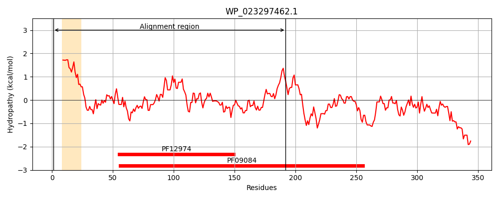
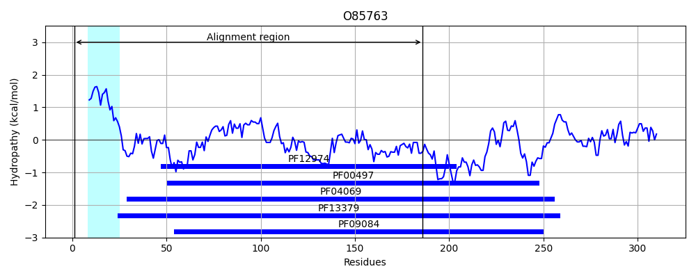
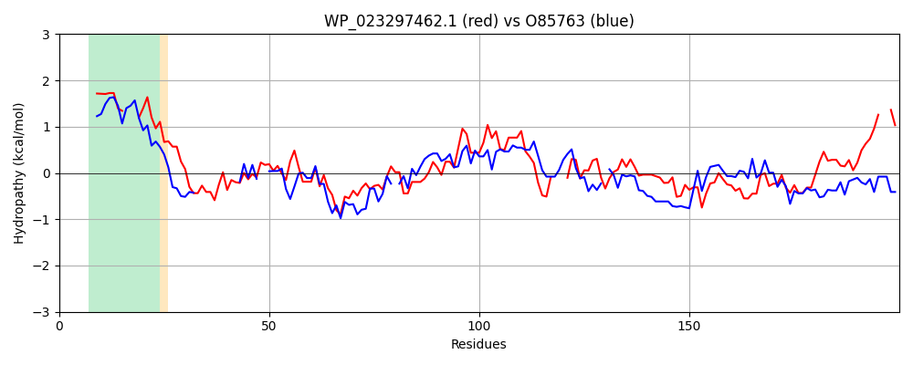

Hit Accession: O85763
Hit TCID: 3.A.1.17.2
Hit Description: gnl|BL_ORD_ID|7673 gnl|TC-DB|O85763|3.A.1.17.2 PUTATIVE SULFONATE BINDING PROTEIN PRECURSOR - Pseudomonas putida.
Mach Len: 200
e:0.000000
Query TMS Count : 1
Hit TMS Count: 1
TMS-Overlap Score: 0.850000
Predicted Substrates:CHEBI:33543;sulfonate
BLAST Alignment:
Score: 172 , Bit scores: 70 bits, E-value: 8.5e-14, Alignment length: 200, Percentage identity: 32
Query: 1 MMKAFFSRTLLALVAV---IGLAANAQAETLRTIRIGVPDQSAGSQPFIEGPVGMAFIRHQLEEVFKPQGVEVQWQFFKGAGPAVNEALANRQLDFVYLGDLAAIIGKANGLPTRLLL---GSRGSESWLAVTKASGIKTLADLKGKRVAVYRGTADQLAFDRALQTAGLNERSLQVINLDWNAGKAALAAGRVDA--VW 192
M F R L+AL A G AQAE+LR G Q + G + + + LE+ QGV+VQW F G GP + E L +DF G+ + +A G + + SE+ L V K S I+++ +LKGK+VA+ +G+ RAL+ AGL +Q + L + +AA G VDA +W
Sbjct: 1 MRTVFLRRGLVALFAAAVSFGAITQAQAESLRI----------GYQKY--GTLVLLKAKGTLEKRLAEQGVQVQWTEFPG-GPQLLEGLNVGSIDFGVTGETPPVFAQAAGADLLYVAYEPPAPHSEAIL-VPKGSPIQSVKELKGKKVALNKGSNVHYLLVRALEDAGLKYSDIQPVYLPPSDARAAFERGSVDAWVIW 186 | Protein Hydropathy Plots: |
|---|
|  |  |
Pairwise Alignment-Hydropathy Plot:
|
|---|
|  |